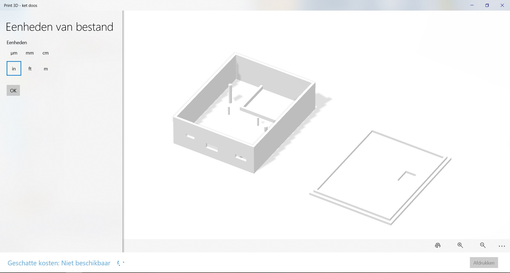

In dit tabblad worden alle opdrachten en progressies van SMART Technology weergegeven.
Alle data wordt onderverdeeld per week.
Voor smart technology stond eigenlijk het Internet of Things met het PCB-centraal. Uiteindelijk is het idee om met deze PCB een plant automatisch water te geven.
Deze week kregen we ten eerste een potje met eigenlijk alle benodigdheden voor deze PCB. Via de website Van robotexchange werden alle handleidingen en touturials gegeven over hoe je je PCB in elkaar moest zetten.
Voor die lessen was Mathijs ook aanwezig om zo de nodige tips en hulp aan te bieden.
Deze eerste week was eigenlijk een introductie over hoe het PCB werkt en hoe het in elkaar gezet moet worden. Uiteindelijk was het doel om de lichtsenzor aan te sluiten waarbij er een blauw lampje aan gaat. Op onderstaande foto is te zien dat wanneer mijn vinger boven de senzor is, dus als het donker is, er een signaal afgegeven wordt dat het blauwe lampje gaat branden.


In de weken erna ben ik stap voor stap bezig geweest met het programmeren en in elkaar zetten van het PCB. Hieronder een aantal foto's over de voortgang.


Ook is het gelukt om het pcb de programmeren in de 'Blynk'-app. Met deze app kun je de verschillende elementen (zoals licht, temperatuur en luchtvochtigheid) meten. Hier heb ik echter geen screenshot van.
Ook heeft mijn pcb het probleem dat het pompje de verkeerde kant op draait. Volgens Mathijs is dit een fout in de code waar meer studenten last van hadden en dat wij daar op het moment niet veel aan konden doen. Uiteindelijk zou hij nog iets op het forum zetten om dit aan te passen, maar dat is helaas niet gebeurd.
Vervolgens ben ik bezig geweest met het ontwerpen van het PCB. Dit ontwerp is vervolgens in China geprint worden om vervolgens gesoldeerd te worden en daadwerkelijk in gebruik te kunnen nemen.
Dit ontwerpen heb ik gedaan in het programma: Eagle. Eagle is een autodesk software die het mogelijk maakt om een PCB-schakeling digitaal te maken en deze uiteindelijk te kunnen printen.
In onderstaande foto is een printscreen te zien van mijn ontwerp in Eagle.

Vervolgens heb ik het onwerp ingeleverd op robotexchange.io zodat Mathijs deze nog kon controlleren. Mijn PCB had geen ground plane en de verbinding tussen LDR en VN waren niet gemaakt. Deze heeft hij voor mij aangepast en vervolgnes is het ontwerp naar China opgestuurd om geprint te worden.
Hieronder het resultaat:

Om vervolgens de IOT Schakeling helemaal compleet te maken en het geprintte pcb-tje te laten werken, moet het eerst nog in elkaar gesoldeerd worden. Daarom zijn we op 5 december 2019 terug gekomen naar de HAN om het pcb in elkaar te solderen.

Het solderen is zonder complicaties gelukt, ook om direct alles aan te sluiten. Hieronder het resultaat.

Gezien ik bij ATAG Benelux gewerkt heb aan een project met betrekking tot 3D-printing, staat alle overige informatie over 3D-printen en haar technieken daar vermeld.
Om het pcb te beschermen van uiteindelijk vocht van en om de plant heen, is het van belang dat deze goed beschermd wordt. Dit wordt gedaan door middel van een bakje die 3D-geprint gaat worden. Door het te 3D-printen kunnen er allemaal aanpassingen gedaan worden zodat alle senzoren en elementen van de schakeling naar buiten kunnen en dat de gegevens goed gelezen kunnen worden.
Voor deze workshops zijn we tussen november en eind december een aantal keer in Arnhem geweest om les te krijgen over het ontwerpen van een bakje in Solidworks. Solidworks is een CAD programma die het mogelijk maakt om vanuit niks een ontwerp te maken die vervolgens geprint kan worden.
Zelf had ik enkele complicaties met Solidworks waardoor mijn laptop die software niet aankon. Ook via omwegen van de HAN is dat niet gelukt om te doen. Uiteindelijk om toch mijn ontwerp te maken heb ik via de Laptop van een vriend van mij het ontwerp kunnen maken. Hier ben ik toen een hele middag mee bezig geweest. Gezien hij al kennis had van het CAD programma kon hij mij mooi uitleggen hoe ik het bakje het beste kon ontwerpen. Wij hebben in Arnhem natuurlijk ook de workshops gehad, waar ik altijd ben geweest, maar doordat ik niet mee kon werken ging dat lastig en moest ik het doen op mijn geheugen. Gelukkig heeft hij mij nog de nodige aanwijzingen kunnen geven om het bakje te ontwerpen.
Hieronder zijn verschillende printscreens te zien van hoe ik het ontwerp heb gemaakt.
Via deze link is het STL-file te zien.
Gezien het printen van het bakje erg veel tijd kost, is er voor gekozen om het bakje te printen met mijn gehele projectgroepje. Daarbij is ook het ontwerp van Coen gebruikt. Uiteindelijk is het bakje in twee delen geprint, eerst het bakje die samen met een ander groepje geprint kon worden, en later de deksel die ook weer met een ander groepje geprint kon worden.
Hieronder een aantal foto's van het printen en het uiteindelijke resultaat:


Om de kennis rondom het 3D-printen te vergroten zijn we op 21-11-2019 nog op excursie geweest naar Oceanz in Ede. Oceanz is een bedrijf gespecialiseerd in proffessioneel 3D-printen.
Tijdens deze workshop kregen we eerst een presentatie van Frank Elbersen over Oceanz en hoe het 3D-printen bij hun in zijn werk gaat. Vervolgens hebben we een rondleiding gehad in het bedrijfspand.

Wij hebben voor ons project Oceanz uiteindelijk ook benaderd om iets voor ons te kunnen printen. Eigenlijk via deze excursie zijn wij bij Oceanz terecht gekomen. Hieronder het filter wat wij bij Oceanz hebben laten printen.

Meer hierover in het tabblad Project.